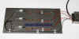

LED & illuminazione
ILLUMINAZIONE PER ACQUARIO
Come realizzare una plafoniera in kit con led ed alimentatore per il 220V "Fai da te" di R.Chirio

Acquario Marino con medie dimensioni, da 250 litri illuminato con 48 led 3W White+Blu.
La plafoniera realizzata in alluminio è tenute distante 10cm dalla superficie dell'acqua.
{kind=link}
KIT 220V con 9 led P4 star
Composto da:
- 9 Led Seoul P4 star White
- 3 resistenze 1,2 ohm 5W
- 1 Alimentatore 220/12V 3,5A
ordinabile direttamente a : info@chirio.com
Pagamento Postepay oppure Paypal
- Spedizione pacco celere 3 -
Con questo kit è possibile realizzare una potente illuminazione per acquario, composto da 9 Led P4 star per un totale di oltre 2160 Lumen.
Per esempio fissando i led su una piastra in alluminio da 1mt x 40cm e distribuendoli su tre file, si può realizzare un coperchio per illuminare un acquario di medie dimensioni, con un consumo totale di appena 40W dal 220V. Non è necessario mettere lenti sui led in quanto l'angolo di uscita di 130° è adatto per una illuminazione vicina e diffusa su tutta la superficie dell'acquario.
Infinite altre applicazione a vostra scelta, basta usare un po’ di immaginazione.
- Sono disponibili a richiesta lenti da da 10°, 25° e 45°,. per soddisfare ogni esigenza di illuminazione.
- Disponibile led P4 BLU per aumentare la temperatura colore a 10000° K oppure a 14000°K
Soluzione a 10000°K composta da 9 LED White 6300°K + 3 LED Blue (40W)
Soluzione a 14000°K composta da 6 LED White 6300°K + 3 LED Blue (30W)
- Collegando il LED DIMMER RGB è possibile ottenere dissolvenze di luce con effetto alba/tramonto.

{kind=link}
IMPORTANTE il led è un componente elettronico delicato, prestare massima attenzione al collegamento e rispettare le caratteristiche elettriche. Tutti i Power led durante il funzionamento scaldano parecchio, prima dell'accensione devono essere fissati su un opportuno dissipatore.
Mai guardare direttamente la luce del led acceso può provocare danni agli occhi.
Utilizzare un saldatore con bassa potenza (max 30W) ed saldare i terminali prima di fissare il led star sul dissipatore.
{kind=link}
KIT 220V con 48 led P4 star
Composto da:
- 39 Led Seoul P4 star White
- 9 Led Seoul P4 star Blue
- 13 resistenze 1,2 ohm 5W
- 3 resistenze 2,7 ohm 5W
- 1 Alimentatore 220/12V 16A
ordinabile direttamente a : info@chirio.com
Pagamento Postepay oppure Paypal
- Spedizione pacco celere 3 -
Con questo kit è possibile realizzare una potente illuminazione per grossi acquari, composto da 48 Led P4 star White e Blue per un totale di oltre 9000 Lumen, con assorbimento di 190W, adatto per acquari da oltre 300 litri con dimensioni da 150 x 60 x 60cm ed oltre.
- Tutti i led vanno fissati e collegati su una piastra dissipatore in alluminio, con le dimensioni della vasca, inoltre è da ricavare un coperchio per eventualmente fissare i ventilatori a 12V per raffreddare i led.
- Collegando il LED DIMMER RGB è possibile ottenere dissolvenze di luce con effetto alba/tramonto.
Commenti
Con l'illuminazione Led si possono ottenere ottimi risultati sia luminosi che di risparmio energetico.
Ottimizzando la disposizione dei led e realizzando un buon raffreddamento degli stessi è pensabile di ottenere un risparmio del 50% di energia nei confronti dei tubi neon.
- Collegando il LED DIMMER RGB è possibile ottenere dissolvenze di luce con effetto alba/tramonto, accendendo e spegnendo con dissolvenza incrociata i led bianchi e blu, inoltre sul terzo canale driver è possibile inserire led rossi per aumentare l'effetto alba-tramonto. Facilmente programmabile tramite programma USB.
© Roberto Chirio: all rights reserved.